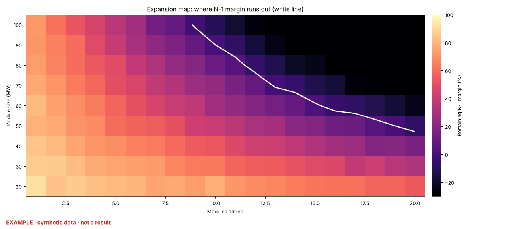
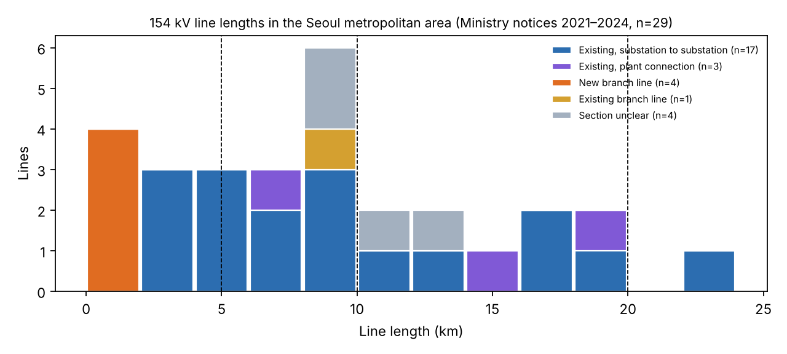
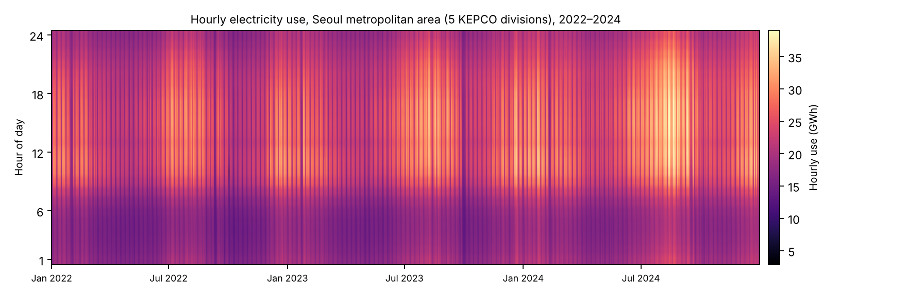
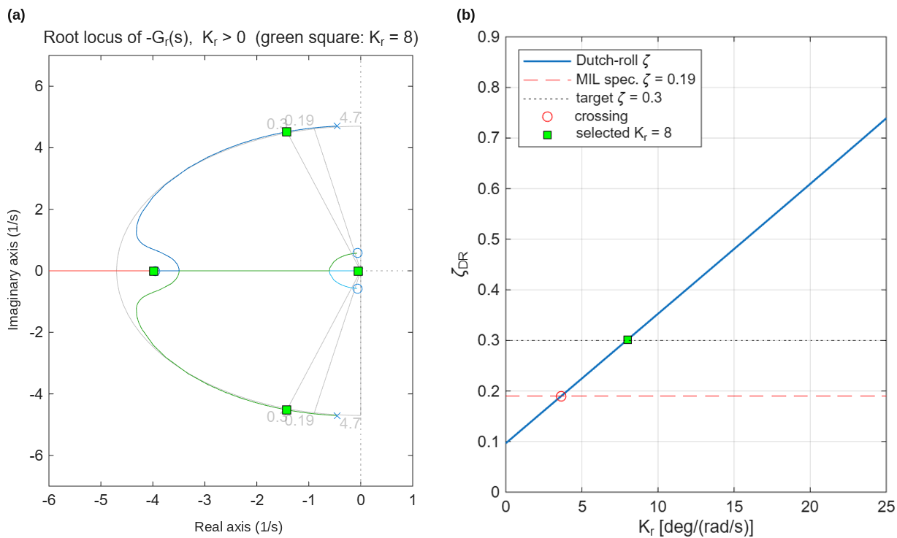

Interests
Three areas of power systems: Planning, Operation, Control.
Power System Planning

Where can a large new load connect, and how many can the grid take before N-1 fails?
Large-load interconnection · N-1 security (NERC TPL-001) · Expansion limits
So far: an IEEE 24-bus pilot and a modular study with Korean public data, in progress. See the project.

From my project data: 29 154 kV lines in government notices set the 4, 9 and 14 km line lengths in my model.
Power System Operation

Every planning answer rests on power flow, and the load it starts from peaks on summer afternoons and winter evenings.
AC power flow · Optimal power flow · Hourly load data
So far: pandapower in my study, with KEPCO hourly load data for 2022 to 2024. See the project.
Power System Dynamics and Control

Set the requirement first, then tune damping and margin to meet it.
Root locus design · Damping and stability · Requirement-based verification
So far: a T-50 yaw damper raising Dutch-roll damping 0.097 → 0.233 against a 0.19 requirement (MIL-F-8785C). Foundations from aerospace. See the project.